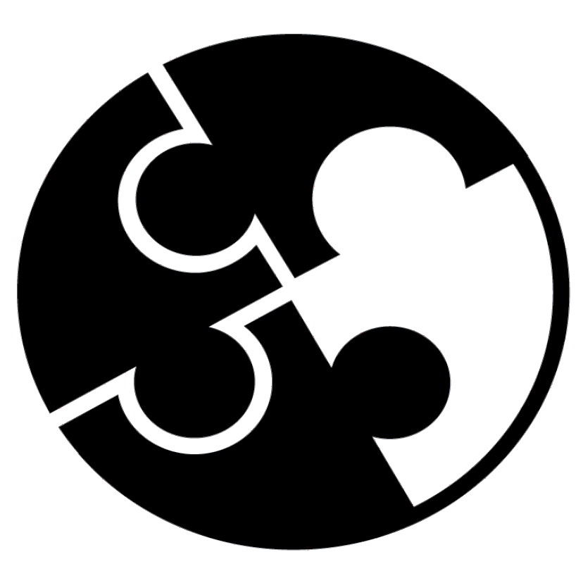
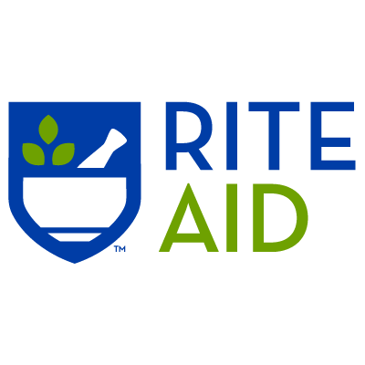

Internships and Work Experience
- Activity #1:
-
During the summer of my junior year in 2021, I participated in an internship with the Teens in
Public Service Organization, which pairs teenage students with various non-profit organizations in
order to instill in them various leadership skills and provide them a means of giving back to their community.
-
At TIPS, I worked with the non-profit organization called Pratt Fine Arts Center where I assisted them in documenting
student artwork through engaging in multiple classes and producing high-quality videos in order to advertise the coursework
as well.
-
I was selected as 1 out of almost 50 students who was selected out of an overall pool of 400 plus applicants.

- Activity #2:
-
Kumon is an academic tutoring center that focuses on improving students' skills in the subject areas of math and reading
through personal tutoring and additional practice assignments.
-
At Kumon, I was tasked with the role of an assignment grader and student-tutor, which meant that I was responsible for grading
student homework, ranging from both basic to more advanced levels and also working with students one on one in order to develop
their skills in these areas.
-
Additionally, I worked to make sure the center was organized and also made sure it was sanitized during
this pandemic period.
-
I worked at Kumon from the beginning of my 9th-grade year to early 12th grade.

- Activity #3:
-
Rite Aid is a store dedicated to providing quality healthcare to the public through providing necessary medications and even
vaccination services.
-
As a sales associate, I am currently responsible for stocking the shelves, organizing products, and assisting customers in their inquiries.
-
I am also involved in labeling items for sale occasions or holidays specials as well.
